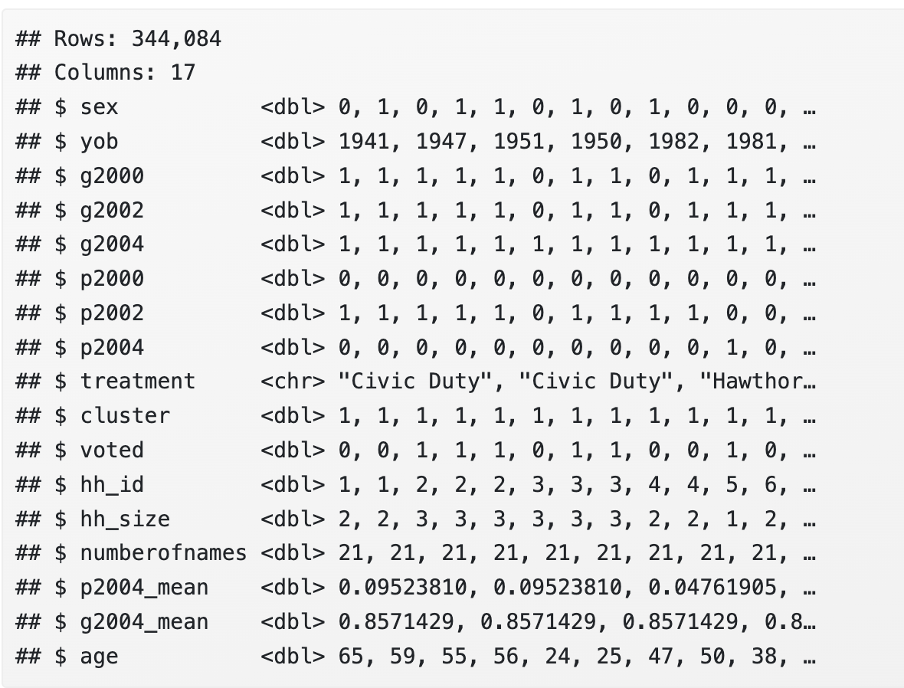
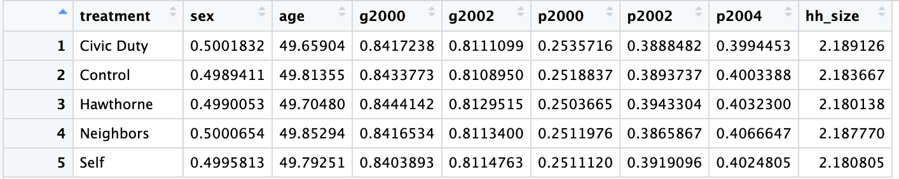
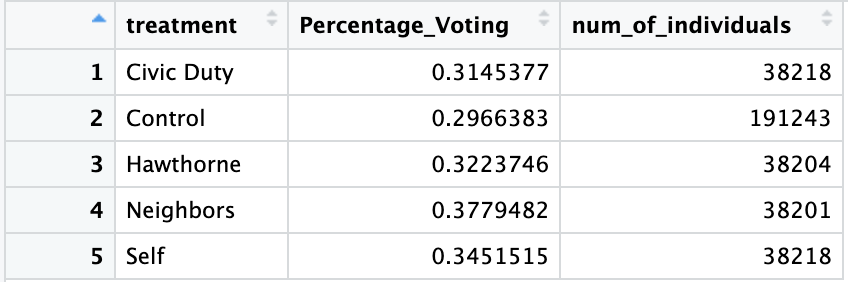

Discussion 2. Analyzing an Experiment in R
STSCI/INFO/ILRST 3900: Causal Inference
Announcements
- HW 1 due Tuesday (September 9) by 5pm
- Submit a PDF from RMarkdown via Canvas
- Office Hours throughout the week (see Syllabus or website)
- Filippo: Thursday 4-5pm in 321A CIS Building
- Shira: Monday 5-6 pm in 329A CIS Building
- Sam: Tuesday 4-5pm, CIS Building
Get out and Vote Experiment
- Why do people vote?
- One long-standing theory: People vote due to social norms (civic duty)
- Empirical evidence for this theory was extremely thin
- Research Question: to what extent do social norms cause voter turnout?
- Article: “Social Pressure and Voter Turnout: Evidence from a Large-scale Field Experiment.”in American Political Science Review
- Authors: Alan S. Gerber, Donald P. Green, and Christopher W. Larimer
- We’ll be analyzing their experiment today!
Experimental Design
- Approximately 80k Michigan households were randomly assigned 1 of 4 mailings encouraging them to vote
- Simply reminded them that voting is a civic duty
- Told that researchers would be studying their turnout based on public records
- Received record of voting turnout within their household
- Received record of voting turnout within their household and their neighbors’ households.
- Third and fourth treatment arms were told that their turnout would be revealed as well
Resources for Markdown
- Hadley Wickham’s R for Data Science “Chapter 27”
- “RMarkdown cheat sheet” from RStudio
- “Data Wrangling and Analyses with Tidyverse” by Bookdown
- “RMarkdown for Scientists” by Nicholas Tierney
- If you can’t figure out how to do something, try Googling it first!
- Also feel free to ask a classmate or ask me :)
- For homework sets, don’t forget about Ed Discussion!
Step 1: Download the .Rmd file here
- Start by running the code in Section “Necessary packages”
- If you get an error, you may need to install the package
Step 2: Import and Clean the Data
gotv <- read_dta("https://causal3900.github.io/assets/data/social_pressure.dta")- Quick peek at the dataset using the function
glimpse - Notice that we have information about year of birth
yobbut not explicitly age - Notice that the treatments are labeled with the numbers 0 through 4
glimpse(gotv)## Rows: 344,084
## Columns: 16
## $ sex <dbl+lbl> 0, 1, 0, 1, 1, 0, 1, 0, 1, 0, 0,…
## $ yob <dbl> 1941, 1947, 1951, 1950, 1982, 1981, …
## $ g2000 <dbl+lbl> 1, 1, 1, 1, 1, 0, 1, 1, 0, 1, 1,…
## $ g2002 <dbl+lbl> 1, 1, 1, 1, 1, 0, 1, 1, 0, 1, 1,…
## $ g2004 <dbl+lbl> 1, 1, 1, 1, 1, 1, 1, 1, 1, 1, 1,…
## $ p2000 <dbl+lbl> 0, 0, 0, 0, 0, 0, 0, 0, 0, 0, 0,…
## $ p2002 <dbl+lbl> 1, 1, 1, 1, 1, 0, 1, 1, 1, 1, 0,…
## $ p2004 <dbl+lbl> 0, 0, 0, 0, 0, 0, 0, 0, 0, 0, 1,…
## $ treatment <dbl+lbl> 2, 2, 1, 1, 1, 0, 0, 0, 0, 0, 0,…
## $ cluster <dbl> 1, 1, 1, 1, 1, 1, 1, 1, 1, 1, 1, 1, …
## $ voted <dbl+lbl> 0, 0, 1, 1, 1, 0, 1, 1, 0, 0, 1,…
## $ hh_id <dbl> 1, 1, 2, 2, 2, 3, 3, 3, 4, 4, 5, 6, …
## $ hh_size <dbl> 2, 2, 3, 3, 3, 3, 3, 3, 2, 2, 1, 2, …
## $ numberofnames <dbl> 21, 21, 21, 21, 21, 21, 21, 21, 21, …
## $ p2004_mean <dbl> 0.09523810, 0.09523810, 0.04761905, …
## $ g2004_mean <dbl> 0.8571429, 0.8571429, 0.8571429, 0.8…- Calculate the ages of everyone in our dataset in the year 2006
- Use
mutatet()to construct an age variable - You can do arithmetic operations with information from the dataset
- For example:
mutate(col_3 = col_1 + col_2)
gotv <- gotv |>
mutate(age = )- Replace the numeric labels of treatment (0-4) with word labels:
- 0: “Control”
- 1: “Hawthorne” (this is the ‘researchers viewing records via public data’ treatment arm)
- 2: “Civic Duty” (this is the ‘voting is your civic duty’ treatment arm)
- 3: “Neighbors” (this is the ‘voting turnout revealed to neighbors’ treatment arm)
- 4: “Self” (this is the ‘voting turnout revealed to household’ treatment arm)
- For this, you will want to use the function
case_whenwhich is described here - The general syntax is
case_when(condition ~ output-value) - A condition would be
treatement == 0and an output value would be"Control"
- When you run
glimpse(gotv), you should see something like this

Step 3: Table 1
- Is the data balanced on covariates?
- We want to check that the treatment groups are balanced on covariates
- For each treatment arm/group, calculate the mean for each of the designated covariates:
- Household size, Nov 2002, Nov 2000, Aug 2004, Aug 2002, Aug 2000, Female, Age (in years)
- Use
group_by()to calculate separate means for each treatment arm - Use
summarise()to computes the mean of each covariate incovariates
covariates <- c("sex", "age", "g2000", "g2002", "p2000", "p2002", "p2004", "hh_size")
gotv_balance <- gotv |>
group_by(...) |>
summarise(...)
print(gotv_balance)- Your table should look like this (covariates similar across the groups)

Step 4: Table 2
- What are the results of the experiment?
- For each treatment group, calculate the percent that voted and the total number of individuals in that group
- Use
group_by()to calculate separate means for each treatment arm - Use
summarise()to to do the following:- Create a column
Percentage_Voting- the percent that voted of each group - Create a column
num_of_individuals- the total number of people in that group
- Create a column
- Your table should look like this
